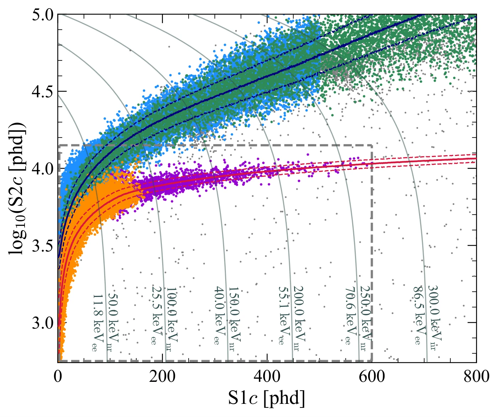
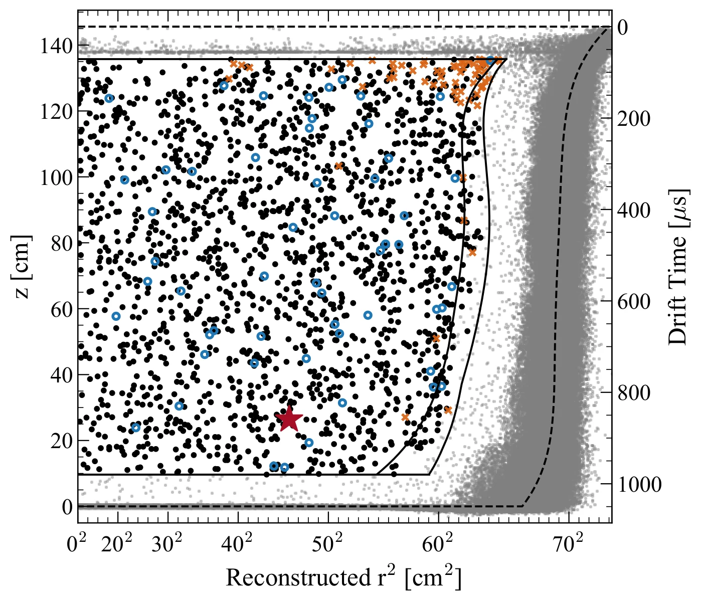
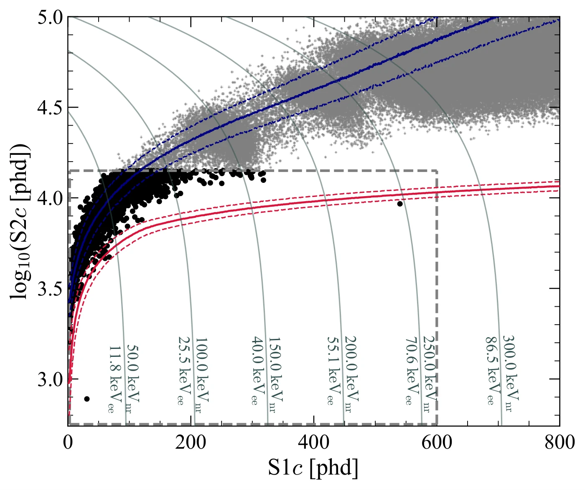
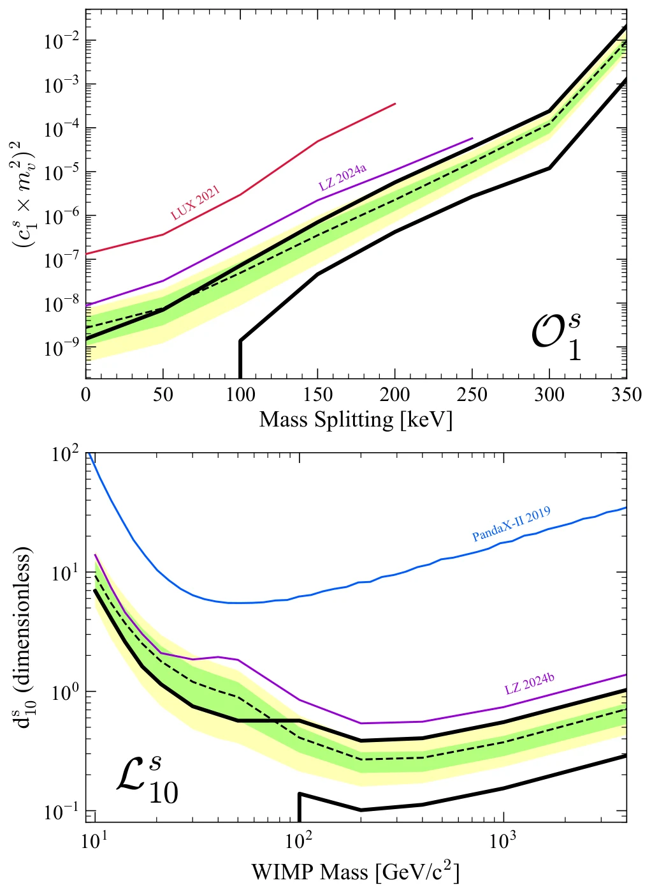

Study material design · W. Alexander Flórez
Particle physics · Direct dark matter detection
Dark matter up to 270 keV
The LUX-ZEPLIN (LZ) search in an extended nuclear recoil window: effective theories, a liquid xenon detector, a \(\qty{248}{keV}\) event, and how one decides whether it is a signal.
Based on: LZ Collaboration, Search for dark matter particle interactions in an extended nuclear recoil energy window with the LUX-ZEPLIN (LZ) experiment (2026).
→ next slide · ↑↓ steps within the slide · space everything in order · F full screen
§ 1 · Motivation
Dark matter, WIMPs and nuclear recoils
Galaxy rotation curves, gravitational lensing in colliding clusters and the cosmic microwave background all point to matter that emits no light and makes up most of the matter in the Universe.
WIMPs (weakly interacting massive particles) arise naturally in many theories beyond the Standard Model.
Direct detection: a WIMP from the galactic halo hits a xenon nucleus and makes it recoil. What is measured is the energy of that nuclear recoil (NR).
The usual searches (spin-independent, SI, or spin-dependent, SD, interactions) look at recoils \(\lesssim \qty{100}{keV}\). If the coupling depends on the momentum transfer \(q\), the spectrum moves to higher energies. That is why LZ extends the window up to \(\qty{270}{keV}\).
A WIMP leaves its fingerprint as the recoil energy of a nucleus.
§ 1 · The result on one slide
What LZ reports
616 models are tested: the non-relativistic Lagrangians \(\mathcal{L}_1\)–\(\mathcal{L}_{20}\) (isoscalar \(s\) and isovector \(v\)) and the inelastic operators \(\mathcal{O}_1\), \(\mathcal{O}_4\); after removing degeneracies, 293 distinct spectra remain.
None of the rare backgrounds studied explains the event, but 2.6σ global is not a discovery: the upper limits obtained are world-leading for every model tested.
A single event gives 3.4σ locally, but only 2.6σ once all models are counted.
§ 2 · Non-relativistic effective field theory (NREFT)
Beyond SI and SD: fifteen operators
The WIMP–nucleon interaction is treated as a four-particle contact interaction:
Momentum conservation and Galilean invariance leave four Hermitian quantities:
\(\vec q\): momentum transfer; \(\mu\): WIMP–nucleon reduced mass; \(\vec v^{\perp}\): relative velocity perpendicular to \(\vec q\); \(\vec S\): spins.
Linear combinations up to second order in \(\vec q\) give 15 operators \(\mathcal{O}_i\). For example \(\mathcal{O}_1 = 1\) (SI) and \(\mathcal{O}_4 = \vec S_\chi\cdot\vec S_N\) (SD). They come from relativistic Lagrangians \(\mathcal{L}_1\)–\(\mathcal{L}_{20}\).
Inelastic scattering: the WIMP transitions to a heavier state, with splitting \(\delta\). More kinetic energy is needed, the low-energy part of the spectrum is suppressed and the rate modulates over the year (peaking around June 2).
Examples in the paper: inelastic \(\mathcal{O}^{s}_{1}\) (similar to a Higgsino model) and \(\mathcal{L}^{s}_{10}\), a magnetic moment interaction with a broad, double-peaked spectrum.
If the coupling grows with q, the recoil spectrum shifts to high energies.
§ 2 · Explorer
Recoil spectrum: mass, \(\delta\) and \(q\) dependence
With \(m_\chi = \qty{1000}{GeV}\), raise \(\delta\): the spectrum loses its low end and becomes almost flat up to 270 keV. The dips come from the xenon nuclear form factor (\(\approx 95\) and \(\approx \qty{280}{keV}\)).
\(v_{\min} = \dfrac{1}{\sqrt{2m_N E_R}}\left(\dfrac{m_N E_R}{\mu} + \delta\right)\): the minimum WIMP speed that can produce \(E_R\).
δ and the q dependence push the spectrum into the new energy window.
§ 2 · Figure 1 of the paper
The two illustrative models

Top · inelastic \(\mathcal{O}^{s}_{1}\), \(m_\chi = \qty{1000}{GeV/c^2}\)
\(\delta = 0\) (blue) is the elastic SI case, which falls quickly. With \(\delta = 200\) and \(\qty{300}{keV}\) the low-energy recoils disappear: the whole useful spectrum lies above \(\sim\qty{50}{keV}\), exactly where the standard search was not looking.
Bottom · elastic \(\mathcal{L}^{s}_{10}\)
WIMP magnetic moment for 50, 200 and \(\qty{1000}{GeV/c^2}\). Large masses give a broad spectrum with a second maximum near \(\qty{200}{keV}\).
Unit couplings: \(c_i^{s} = d_i^{s} = 1/m_v^{2}\), with \(m_v = \qty{246.2}{GeV}\) the Higgs vacuum expectation value. Spectra computed with WimPyDD and the Standard Halo Model.
Inelastic and magnetic-moment models live at high energy.
§ 2 · Kinematics
How much energy can an elastic collision deposit?
\(m_N \approx \qty{122}{GeV/c^2}\) for \(^{131}\)Xe. The WIMP speed in the lab frame does not exceed \(\sim \qty{800}{km/s}\) (galactic escape speed + Earth's motion).
The same calculation for a neutron
\(E_R^{\max} = \dfrac{4 m_n m_N}{(m_n+m_N)^2}\,E_n \approx 0.030\,E_n\) ⇒
A \(\qty{250}{keV}\) recoil requires a neutron of at least \(\sim\qty{8}{MeV}\) in a head-on collision; at that energy scattering is strongly forward-peaked and deposits little energy.
Only heavy WIMPs or MeV neutrons can produce 250 keV recoils.
§ 3 · The detector
A xenon chamber inside two vetoes
Dual-phase TPC: 7 t of active liquid xenon with photomultiplier tubes (PMTs) at top and bottom. Cathode, gate and anode set up the fields that drift electrons to the surface and extract them into the gas.
Skin: 2 t of LXe around the TPC, read out by scintillation. It identifies \(\gamma\)-rays entering or leaving.
Outer Detector (OD): 17 t of gadolinium-loaded liquid scintillator (0.1 %) and 229 t of water. It detects neutrons, \(\gamma\)-rays and muons.
A bottom electrode below the cathode shields the lower PMTs. Between them lies the reverse field region (RFR), 13.75 cm deep, from which charge never reaches the surface.
The TPC measures; the Skin and OD tag what comes from outside.
§ 3 · Two signals per event
S1, S2 and the energy of an event
S1: prompt scintillation at the interaction site. S2: electroluminescence in the gas, when the extracted electrons are accelerated. The S2 pattern on the top PMTs gives \((x,y)\); the S1→S2 delay gives the depth \(z\).
LZ gains: \(g_1 = 0.110 \pm 0.002\) phd/photon and \(g_2 = 34.5 \pm 1.1\) phd/electron (phd = photons detected). S1c and S2c are position-corrected.
The S2/S1 ratio separates electron recoils (ER) from \(\gamma\)-rays and \(\beta\) decays from nuclear recoils (NR) from WIMPs, neutrons and neutrinos: an NR leaves less charge per photon.
Light and charge together give the energy; their ratio tells ER from NR.
§ 3 · Calibrations
ER and NR bands measured with known sources

ER: in situ \(\beta\) decays of tritium and \(^{14}\)C (injected as methane) and of \(^{212}\)Pb (after \(^{220}\)Rn injections).
NR: neutrons from deuterium–deuterium fusion (0–74 keV NRs) and from AmBe (\(\alpha\),n) reactions (0–330 keV). AmBe is what makes it possible to calibrate the new window.
The NEST v2.4.5 simulator is tuned to these bands and provides the detector response for every background and signal.
AmBe calibrates nuclear recoils up to 330 keV.
§ 3 · Supplemental Material · Response model
A break in the NR charge-yield power law
D-D (below 75 keV) and AmBe (high energy) preferred different exponents. NEST v2.4.5 uses \(p = 0.5\) below \(E_0\) and
| Parameter | Value | Role |
|---|---|---|
| \(a\) | 0.0230 | strength of the suppression |
| \(b\) | 0.0289 keV⁻¹ | how it grows with energy |
| \(E_0\) | 74.7 keV | break energy |
For ERs, the recombination fluctuations \(\sigma_p\) become the sum of two skewed Gaussians in \(x = \log_{10} N_q\): this reproduces the ER band widths across the full range.
A single NR model now describes D-D and AmBe together.
§ 4 · Event selection
Search region and fiducial volume

| Criterion | Value |
|---|---|
| Data | 220 live days (27 Mar 2023 – 1 Apr 2024) |
| S1c | 3–600 phd (previously: 3–80 phd) |
| S2c | \(10^{2.75}\)–\(10^{4.15}\) phd; S2 > 645 phd |
| Fiducial mass | \(4.71 \pm 0.08\) t (14.5 % smaller than before) |
| NR efficiency | 96 % on average between 14 and 250 keV |
The radial FV boundary depends on depth and azimuth: it requires \(< (1.0 \pm 0.5)\times 10^{-4}\) expected wall events and at least 8 cm from the true wall, to suppress MSSI events.
At the top the FV sits 12.8 cm below the gate; at the bottom, 9.0 cm above the cathode.
A smaller volume in exchange for staying away from the walls and cathode.
§ 4 · Samples and bias
Three samples by veto, and a failed “salt”
Science
No signal in either veto. This is where the WIMP is searched for.
Prompt veto
Skin > 2.5 phd within \(\pm\qty{0.25}{\mu s}\) of S1, or OD > 4.5 phd within \(\pm\qty{0.3}{\mu s}\). Tags \(\gamma\)-rays and neutrons.
Delayed veto
Skin > 300 keV or OD > 200 keV up to \(\qty{600}{\mu s}\) later (neutron capture). Tags neutrons.
Backgrounds have the same shape in \(\{S1c,\ \log_{10} S2c\}\) in every sample but different rates; the tagging efficiencies \(\lambda\) link the three and constrain \(\gamma\)-rays and neutrons. Random coincidences veto 0.01 % (prompt) and 2.86 % (delayed) of events.
Salting: fake events were injected to avoid analyst bias, but their NR model predated AmBe and did not cover the high-energy region well. The 4 salt events fell outside the 90 % NR band. The analysis is considered non-blind.
The vetoes do not discard events: they sort them into samples that are fitted together.
§ 4 · Figure 4 of the paper
1710 events in the science sample

Almost everything falls in the ER band, at the upper left: low-energy \(\beta\) and \(\gamma\) backgrounds.
A lone point at (540.1 phd, \(10^{3.98}\) phd): right in the NR band, between the 200 and 250 keV\(_{nr}\) lines.
The event below \(\log_{10} S2c = 3\) is consistent with an accidental coincidence.
The features in the ER band above 25 keV\(_{ee}\) come from \(^{125}\)I and \(^{133}\)Xe; they sit slightly below the \(\beta\) band because Auger cascades increase recombination.
At high energy the NR band is almost empty: a single event stands out.
§ 5 · The event of interest
16 June 2023, 21:22:39 UTC

The S1 split between the two PMT arrays agrees with the reconstructed \(z\), and the S2 shape with a point-like interaction at that depth.
The S1 pulse shape cannot separate ER from NR at S1c \(\sim 550\) phd: there are few calibration NRs near 250 keV and none within a few centimetres of the event.
It looks like a 248 keV nuclear recoil where almost no background is expected.
§ 5 · Scrutiny
Did anything unusual happen around the event?
| Before the event | What |
|---|---|
| 8 days | AmBe NR calibration (one of three) |
| 25 min | A \(^{57}\)Co source is removed (122 and 136 keV γ-rays, mean free path < 4 mm in LXe), on the opposite side |
| 41 min | Last muon seen in the OD |
| 127 min | Last muon seen in the TPC |
No anomalous populations in the calibrations or in the nearby data. The radon tag for \(^{214}\)Pb cannot be applied: the detector was in the mixed-flow state.
Waveform
- Rise time: less consistent with an RFR MSSI (near the cathode, faster rise times) than with an NR at the reconstructed \(z\).
- S2 consistent with a single-site interaction template (α decays at the same position).
- S1 pattern across individual PMTs: consistent at 2σ in \(z\) and 1σ in \((x,y)\) with single-site ERs; inconsistent with an RFR MSSI, but indistinguishable from a wall MSSI.
Nothing in the detector or the waveform gives away an artefact.
§ 6 · Background model · science sample
Expected events in 220 d × 4.71 t
ER: \(\beta\) decays of \(^{214}\)Pb and \(^{212}\)Pb, \(^{85}\)Kr, \(^{136}\)Xe, \(^{124}\)Xe, solar neutrinos, \(\gamma\)-rays from materials, residual tritium and \(^{14}\)C, \(^{125,127}\)Xe. New because of the wide window: residual \(^{83\mathrm{m}}\)Kr and \(^{125}\)I (effective half-life of 3.6 d due to purification).
NR: atmospheric neutrinos via CEνNS and (\(\alpha\),n) neutrons from materials, constrained only by the vetoes (tagging efficiency 92 ± 4 %).
Other: accidental coincidences of isolated S1 and S2 pulses, and MSSI events. Combined fit: 1713 ± 39 expected versus 1710 observed.
Over a thousand ERs, but near the event only hundredths of an event remain.
§ 6 · A rare background
MSSI: multiple scintillation, single ionization
An ER deposits energy at two sites; one is in a region with no charge collection (the RFR below the cathode, or within a few mm of the wall). The S1s add up; only one S2 survives: the event shifts towards the NR band.
With S2c = 9268 phd, the first scatter would have \(12 \pm 2\) keV and S1c \(\approx 69 \pm 17\) phd. That leaves ≈ 471 phd of S1 for the second one.
But depositing only 12 keV more than 20 cm from any boundary requires a \(\gamma\)-ray to cross \(> \qty{60}{cm}\) of LXe at a grazing angle without interacting again: very unlikely.
Model: simulation of material radioactivity and \(^{214}\)Pb, with a 100 % rate uncertainty. Validated with 12 sub-regions (5.4 t volume and a high-energy sideband): \(p = 0.7\).
An MSSI could mimic the event, but not 26 cm from the cathode and 27 cm from the wall.
§ 6 · The other candidates
Neutrons, neutrinos and accidental coincidences
Neutrons
- (\(\alpha\),n) from materials: the dominant source; constrained by the vetoes.
- Spontaneous fission: high multiplicity ⇒ multiple scatters.
- Muons: \(2.1\times10^{9}\) simulated (≈ 1200 years of LZ), no similar deposit. 90 % upper limit: \(< 4.6\times 10^{-4}\) events.
- A neutron making a 250 keV recoil would come with several events at lower energy.
Atmospheric neutrinos
Well-understood coherent scattering (CEνNS), with an almost exponentially falling spectrum: \(0.11 \pm 0.02\) events in the whole window.
Moreover, at 248 keV the recoil energy is no longer consistent with full coherence.
Accidentals
Random pairs of isolated S1 and S2 pulses; normalised with unphysical drift time (UDT) events.
After all cuts the model predicts \(2.4 \pm 0.2\) UDT events and 3 are observed. They dominate at low energy.
Every background able to mimic the event would come with many more.
§ 7 · Statistics
Local and global significance, and looking elsewhere
Profile likelihood ratio (PLR) with a two-sided test statistic; unbinned fit of the three samples simultaneously.
With 293 models, one of them always fits a fluctuation well. LZ generates background-only toy datasets, analyses each with all 293 models and records the smallest \(p\): this yields \(p_{\text{glob}}\).
3.4σ local ⇒ 2.6σ global corresponds to about 14 independent tests: the models are strongly correlated, because they all “see” the same event.
The more models you test, the less surprising a fluctuation becomes.
§ 7 · Supplemental Material · Tables S7 and S8
Which models “see” the event?
With masses \(\lesssim \qty{50}{GeV}\) a WIMP cannot produce 248 keV (recall the kinematics): significance 0.
Above \(\sim\qty{100}{GeV}\) many models exceed 3σ. The maximum, 3.4σ, appears for \(\mathcal{L}_{10}\), \(\mathcal{L}_{16}\), \(\mathcal{O}_1^{v}\) and \(\mathcal{O}_4\) with large \(\delta\).
Isoscalar \(\mathcal{L}_1\) and \(\mathcal{L}_5\) (pure SI, very soft spectrum) do not see it: their spectrum barely reaches 248 keV. For the inelastic models, “–” means the event is not kinematically allowed.
Each cell: at least 30,000 toys to obtain \(p_0\), converted to one-sided standard deviations.
The event favours heavy WIMPs with hard spectra.
§ 7 · Figure 6 of the paper
90 % intervals: the lower limit lifts off zero

Two-sided 90 % confidence intervals are built mass by mass (a raster scan). For \(\mathcal{L}_j\) the coupling \(d_j\) is constrained; for \(\mathcal{O}_i\), the dimensionless form \((c^{N}_i \times m_v^{2})^{2}\).
Because of the event, the lower limit is non-zero for \(\delta \gtrsim \qty{100}{keV}\) and for \(m_\chi \gtrsim \qty{100}{GeV}\).
The upper limits improve on LUX, PandaX and earlier LZ: they are world-leading for every model tested.
\(\mathcal{O}^s_1\) can be recast as an SI cross section: \((c_1^{s} m_v^{2})^{2} = \sigma^{N}_{SI}\,\pi m_v^{4}/\mu^{2}\) (Figure S7).
An excess lifts the lower limit, but the upper limits are still world-leading.
§ 7 · Conclusion
What remains open
- LZ explored nuclear recoils from 5.4 to 270 keV with 2.84 t·yr, motivated by NREFT and inelastic dark matter.
- One event consistent with an elastic NR of \(248 \pm 23 \pm 23\) keV, in a region of very low background.
- Global significance 2.6σ; maximum local 3.4σ, typically for \(m_\chi > \qty{200}{GeV}\).
- None of the rare backgrounds or detector effects studied explains it convincingly.
What next? LZ has kept taking data with the same electric field since 1 April 2024. If this is dark matter, more events should appear in the same region; if it is a fluctuation, they will not.
A lesson in method: widening the window forces you to model rare backgrounds (MSSI, \(^{125}\)I, \(^{83\mathrm{m}}\)Kr), calibrate up to 330 keV and correct for the number of models tested.
More exposure will tell whether the 248 keV event was the first of many.
Practice score: 0 / 5
Check what you learned
Glossary
Terms used in this lesson
- WIMP
- Weakly interacting massive particle; a dark matter candidate with a mass from GeV to TeV.
- NREFT
- Non-relativistic effective field theory: 15 operators \(\mathcal{O}_i\) built from \(\vec q\), \(\vec v^{\perp}\) and the spins.
- Inelastic scattering
- The WIMP transitions to a state heavier by \(\delta\); low-energy recoils are suppressed.
- Dual-phase TPC
- Time projection chamber with liquid and gaseous xenon that measures S1, S2 and the 3D position.
- S1 / S2
- Prompt scintillation / electroluminescence of the electrons extracted into the gas.
- ER / NR
- Electron recoil (\(\beta\), \(\gamma\) backgrounds) / nuclear recoil (WIMPs, neutrons, neutrinos).
- Fiducial volume
- Inner region (4.71 t) away from walls and electrodes, where the background is lower.
- MSSI
- Multiple scintillation, single ionization: part of the energy lands where charge is not collected.
- RFR
- Reverse field region below the cathode; its charge drifts downwards and is lost.
- PLR
- Profile likelihood ratio: compares the “background” and “background + signal” hypotheses.
- Look-elsewhere effect
- (LEE) Correction of the significance for having tested many hypotheses.
- Salting
- Injecting fake events into the data to avoid analyst bias.